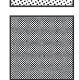
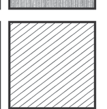

Texture
We are surrounded by texture. Texture is found in everything. It appears on the surfaces of various objects, such as tree bark, stones, soil, animal bodies, and more. Texture is an important aspect of drawing that helps to bring emotion, realism, and appeal to the artwork. Texture helps in enhancing realism, adding visual interest, providing different interpretations for viewers, and helping the artist convey their message through drawing.
There are two types of textures: the textures felt by touching, and the textures perceived by looking. An artist can represent texture in an image. Figure 24 shows different appearances of textures in the image.



